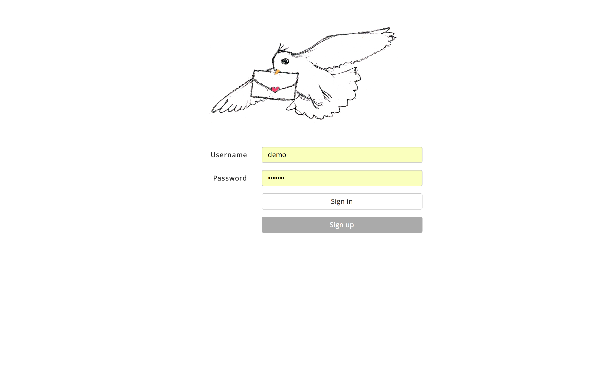

Postcard Express is my favorite side project. It's an app for sending digital postcards and recording their locations at the same time. A short introduction is available in this demo video.

TeleAgro+ is a navigation application for agricultural vehicles. I implemented the web interface and the mobile app for this application as a student assistant.

My adventure is an experiment to combine the resume with an animated map.

Random Bubbles is an exercise for animating multiple elements at the same time.
-
Front End Development
HTML
CSS
media query, animation, Sass, Twitter Bootstrap
JavaScript
jQuery, Openlayers, mapbox.js, d3, AngularJS, underscore, backbone, requireJS
-
Back End Development
django (Python)
-
Mobile Development
Android
-
Databases
PostgreSQL
MongoDB
-
Design Patterns
MVC, REST, Mediator
-
GIS
Webmapping (Presentation, Report)
Geoscripting
GIS-Analysis with Free und Open Source Software
Geodatabases
Mobile Geo-Technologies for real-time cities
-
Geography
Urban Ecology (Presentation, Report)
Development of cities in Deutschland 1870-2020 (Presentation, Report)
-
Computer Science
Operating Systems and Networks
Algorithms and Data Structures
Knowledge Discovery in Databases
Cloud Computing
Parallel Data Processing and Analysis
My name is Sun Sen and I come from China. I am currently a master student at Heidelberg University in Germany.
My major is Geographical Information Science, or GIS for short. I am interested in web development, data analysis and languages.
Contact
sensun[at]live.cn
About the sun and trees in the navbar
They are a symbolisation of my name, because "sen(森)" means forest in Chinese and "sun" happens to have the same spelling as "sun" in the "sunshine". I like it because it implies photosynthesis which makes our planet sustainable.